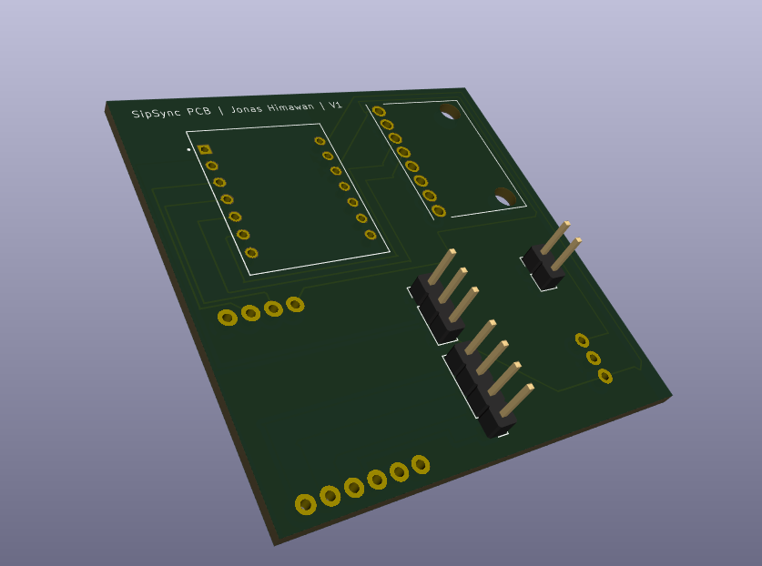
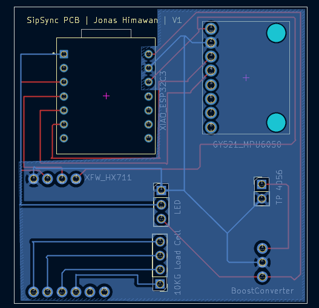
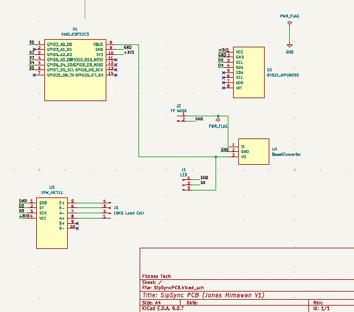
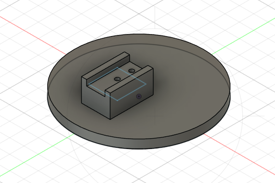

Embedded hardware for smart hydration tracking.
SipSync tracks hydration and sip activity by measuring the bottle’s water weight with a 1–5 kg load cell and HX711 amplifier. I designed a custom 3D-printed plate that attaches to the load cell so the bottle can apply force consistently during testing.
The system determines whether the user is drinking by combining MPU-6050 accelerometer tilt data with decreases in measured water weight. SipSync then sends sip events and water-consumption data to the MyFitnessTech mobile app over Bluetooth Low Energy using the ESP32.
SipSync is powered by a rechargeable 3.7 V LiPo battery connected to a TP4056 charging module and 5 V DC-DC boost converter. A WS2812B NeoPixel LED ring provides real-time feedback for states such as drinking, empty bottle, and ready to connect over Bluetooth. To reduce power draw, the LED ring turns on for 30 seconds during feedback events and then automatically shuts off.
From breadboard prototype to working embedded system.






The first working prototype was implemented on a hand-soldered protoboard and currently functions as intended. The next revision is in progress using a custom KiCad PCB layout to make the hardware more compact and reliable.
I led a three-person hardware team in developing the first working SipSync prototype, coordinating development tasks, debugging teammate hardware, supporting integration across multiple microcontrollers, and collaborating with the organization’s founder on mobile-app integration. I designed the embedded hardware and firmware for BLE communication, MPU-6050-based sip detection, HX711 load-cell weight sensing, WS2812B NeoPixel status lighting, and a 3.7 V LiPo power system using TP4056 charging and 5 V boost conversion. I also designed and hand-soldered the full protoboard prototype, then created a custom two-layer KiCad PCB with custom module footprints, routed power and signal traces, and added a ground plane for a more compact and manufacturable revision. I improved system reliability by reducing MPU-6050 false positives, calibrating weight measurements to 0.5% error, implementing an empty-bottle alert below 15 g, and adding a low-power LED shutoff after 30 seconds of inactivity.